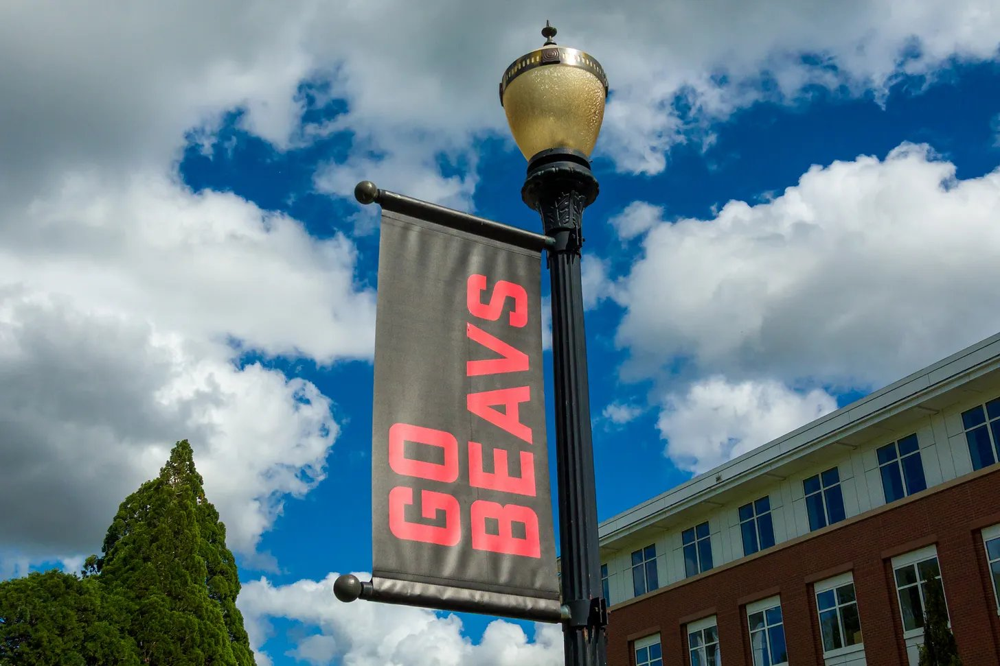
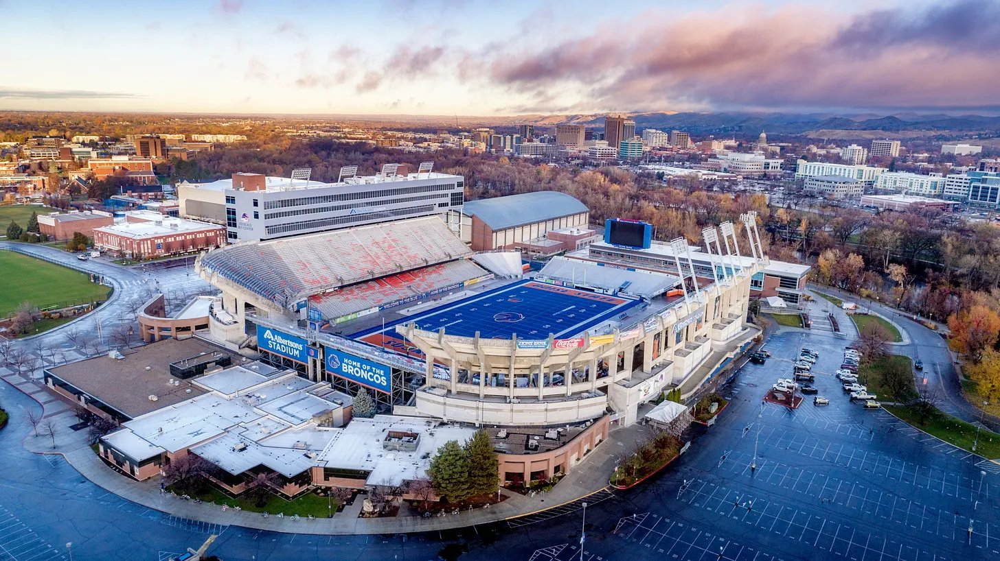

The Elevation Change No. 11 Oregon State Beavers travel to Idaho to take on No. 1 and CFP No. 25 Boise State in the second-straight week of nationally televised Western 20 games.
ESPN College GameDay will host its national show at Boise State for the second time in show history. The first was another Boise State vs. Oregon State matchup in 2010—Boise won the game 37-24. It is the second time the Broncos have been on College GameDay, with a 1-0 record. This will be the fourth time Oregon State has been featured on the program; they sport an 0-3 record, with their last appearance being a 20-37 loss to No. 1 Oregon in 2010.
Oregon State comes into the matchup off of two fairly rough games following a dominant five-game win streak. Back-to-back losses against Fresno State and Texas State have left the Beavers with more questions than answers, especially since stars Braden Atkinson and Jesse Legree have still been producing.

Atkinson still leads the country in passing yards, but was held under 300 yards in a game for the first time against Texas State. Legree had seven straight games with 100+ receiving yards as a true freshman to open the season, but has been limited to less than 100 yards in both of the back-to-back losses.
The Beavers have had an up-and-down defense this season, and its weaknesses have not been able to be overcome by the power of the offense. Fresno nearly put 400 total yards on the defense while Texas State gained 600, two of the highest totals given up this year. Boise State’s offense comes in averaging 473.7 yards per game, making the Broncos yet another tough test for the Beaver defense.
Boise State is coming off of a dominant win against Colorado State, where they put up 64 points, their highest in a game this season. Backup quarterback Max Cutforth stepped in for an injured Maddux Madsen and had one of the best games of his career, throwing for 317 yards and four touchdowns on elite 16/19 passing. Running back Dylan Riley also played his best game in over a month, collecting 280 total yards and three touchdowns. Riley leads the nation in rushing yards at 1,241.

Despite piling on nearly 700 yards of offense on the Rams, Boise State still gave up over 500 yards to Colorado State, a week after allowing 429 to Texas State in a near-upset for the Bobcats. Boise State’s defense had been playing extremely well all season, but it has slipped in effectiveness in two high-scoring affairs over the past two weeks.
The Elevation Change model likes the Broncos in this matchup by two scores. Perhaps if the Beavers had been playing better football over the past two weeks the odds may have been closer, but with Oregon State’s recent play and Boise State’s offensive dominance, expect to see a two-score victory for the Broncos on Saturday afternoon.
Prediction
- Boise State
- 36
- Oregon State
- 27